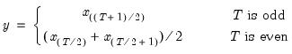

@median Basic Statistics Median. Computes the median of the elements of x. Syntax: @median(x[, s]) x: series, vector, matrix s: (optional) sample string or object when x is a series and assigning to a series Return: number When is odd, the median is the middle ordered-observation and when is even, the median is the average of the two middle ordered-observations. The median may be written as  where the order statistics represent the data ordered from low to high. For series calculations, EViews will use the current or specified workfile sample. Examples Let x be a series of length 6 with observations 1, 2, 3, 4, 5, 6. Then = @median(x) returns 3.5. Cross-references See also @mean.


 is odd, the median is the middle ordered-observation and when
is odd, the median is the middle ordered-observation and when  is even, the median is the average of the two middle ordered-observations. The median may be written as
is even, the median is the average of the two middle ordered-observations. The median may be written as represent the data ordered from low to high.
represent the data ordered from low to high.